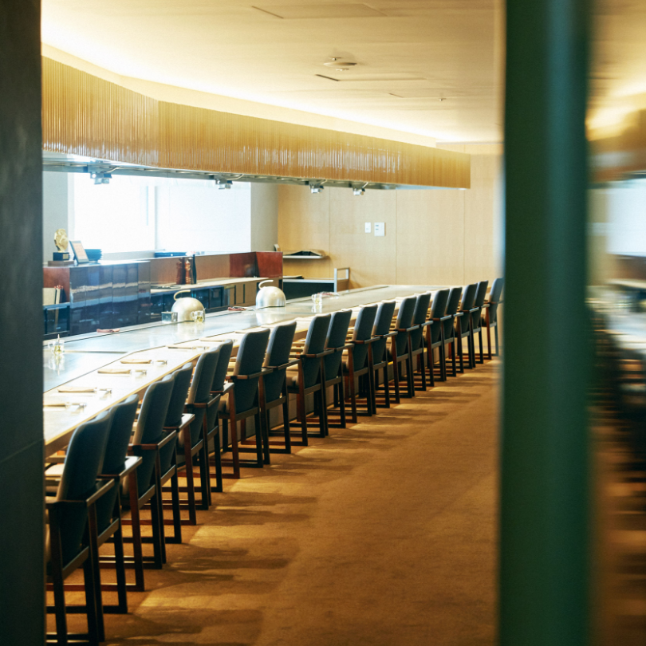
2022.08.02
最高級のステーキがいただける鉄板焼きレストランがある。訪れたのはハイエンドなホテル“ザ・ペニンシュラ東京”の５F、“日比谷 モンシェルトントン”だ。美食家たちが足繁く通うその場所は、味に空間から演出まで全てが一流。４つの個室に設置されたLG Styleも、一歩先を行くホスピタリティの一つだ。
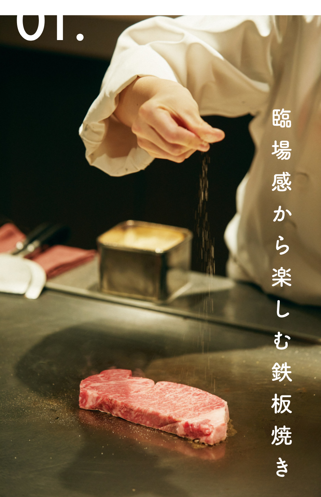
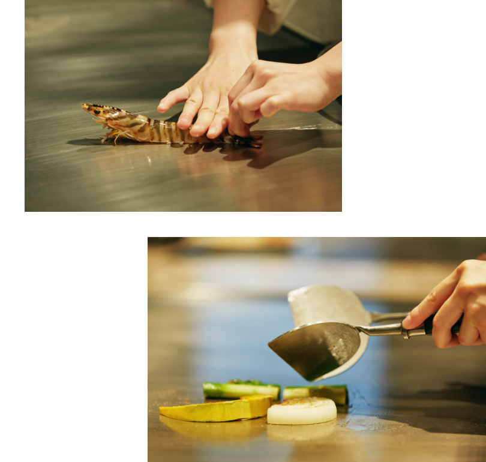
神戸牛をはじめとする最高級和牛のステーキを目の前で焼いていただける“日比谷 モンシェルトントン”。野菜やシーフードには季節の食材を使い、プロの技で素材そのものの旨みをシンプルに引き出してくれる。目を奪われる手さばきと、香り立つ鉄板は、垂涎もの。調理の過程も含めて食の魅力を堪能できる場所だ。ちょっと贅沢なランチや大切な接待で訪れるリピーターも多いそう。
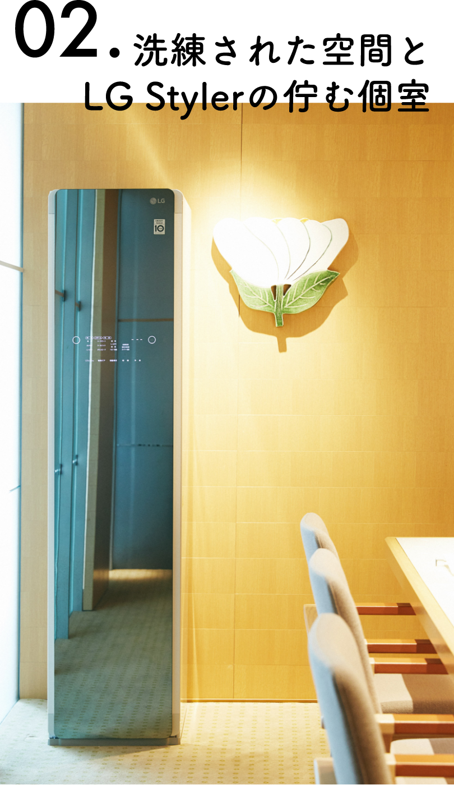
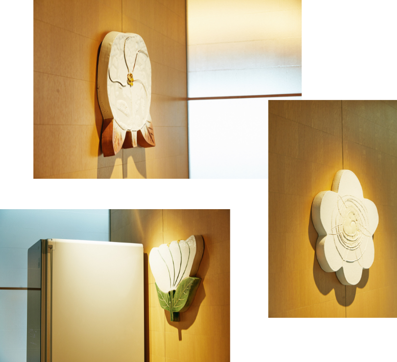
空間デザインは数々の受賞歴を誇る“upsetters architects”主宰の岡部修三氏が担当し、モダンな感性と日本ならではの職人技が癒合。
ガラス・石・木といった素材と丁寧に向き合いながら設けられた4つの個室には、LG Stylerが静かに鎮座する。
個室を彩る陶芸作品は、フィンランドのブランド“マリメッコ”でテキスタイルデザイナーを務め、現在は老舗陶器メーカー“アラビア”のアート部門で陶芸制作に取り組む石本藤尾氏のもの。
ガラス・石・木といった素材と丁寧に向き合いながら設けられた4つの個室には、LG Stylerが静かに鎮座する。
個室を彩る陶芸作品は、フィンランドのブランド“マリメッコ”でテキスタイルデザイナーを務め、現在は老舗陶器メーカー“アラビア”のアート部門で陶芸制作に取り組む石本藤尾氏のもの。
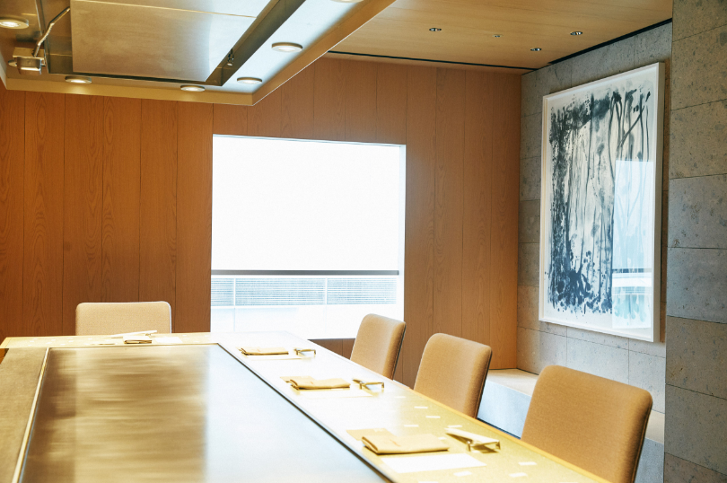
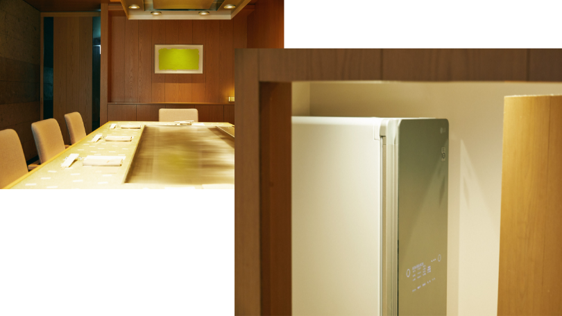
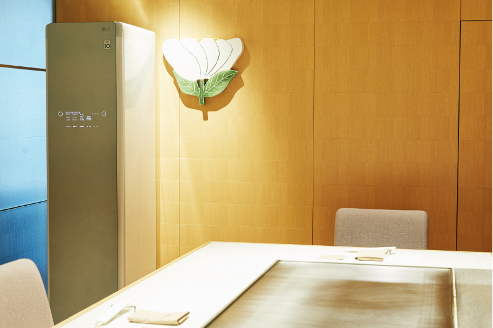
店主にLG Stylerについて伺う。「実は自宅用に購入を考えていたところで、お店にあったらベストだな、と思い立ちました。スーツをお召しの方も多いですしね。導入してみると既にご自宅でお持ちのお客さまも多く、話の種になることも。これまでクロークにお持ちしていた上着を、LG Stylerでケアしながらお食事いただくこともご提案できるようになりました。プラスアルファのサービスになっています」。
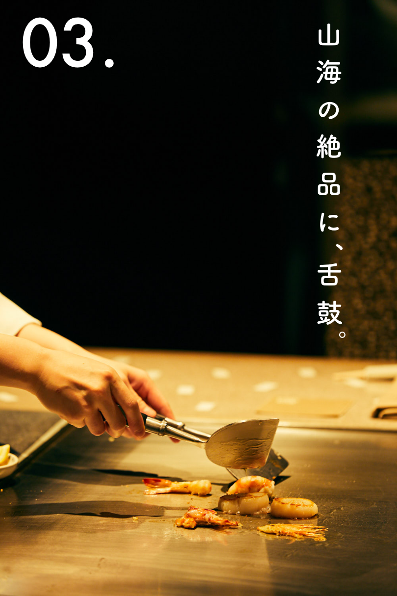
いただいたのは、シンプルな瀬里奈コース(税込16,500円)。熟練のシェフが、鮮やかな技術で一品ずつ仕上げてくれる。前菜をいただいたら、車海老と帆立貝の鉄板焼きが登場。
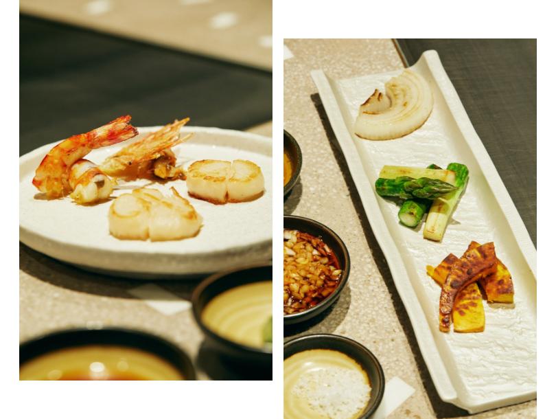
次の一品は、ステーキに備えてさっぱりと野菜の鉄板焼き。この日はみずみずしい群馬県産のアスパラガスと、やさしい甘さの淡路産の玉葱が旬。
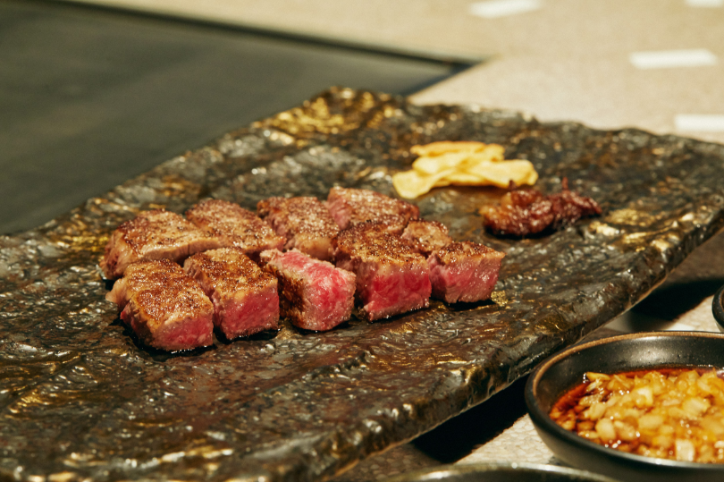
心待ちにしたステーキはオススメのミディアムで。表面はさっくりと、ひと噛みするごとに肉の旨みがとろける味わいは至福。添えられるのは、脂をカリカリに焼き上げたビーフジャーキーと最高級品種である青森の“福地ホワイト六片”にんにくのスライスだ。
プチプチした食感の生黒胡椒や、舌の上でほどける大粒の結晶塩の他、2種のソースが付き、味付けを変えながら楽しめるのも嬉しい。玉ねぎ、わけぎ、りんご、ローストしたアーモンド、レモンで作られた甘酸っぱいオリジナルソースにはファンが多数。
プチプチした食感の生黒胡椒や、舌の上でほどける大粒の結晶塩の他、2種のソースが付き、味付けを変えながら楽しめるのも嬉しい。玉ねぎ、わけぎ、りんご、ローストしたアーモンド、レモンで作られた甘酸っぱいオリジナルソースにはファンが多数。
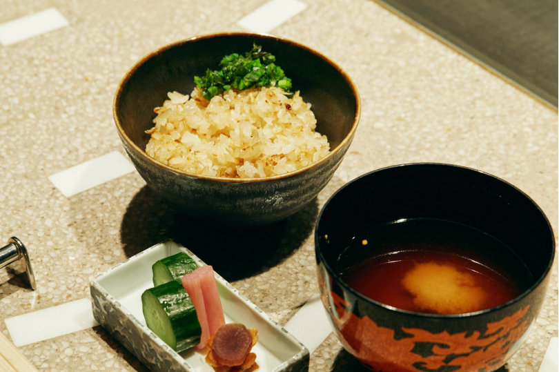
締めのガーリックライスは、鉄板の上で沸騰させたにんにく醤油を、サッとかけて仕上げたもの。炒ったじゃこも加え、食感と風味を堪能できる隠れた逸品だ。
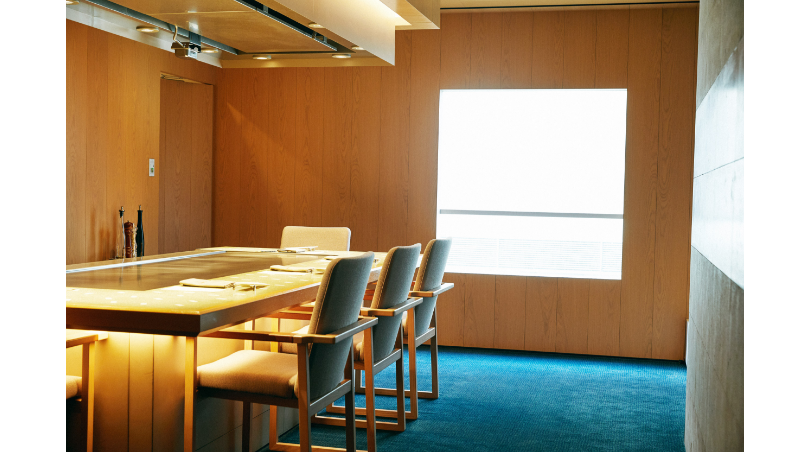
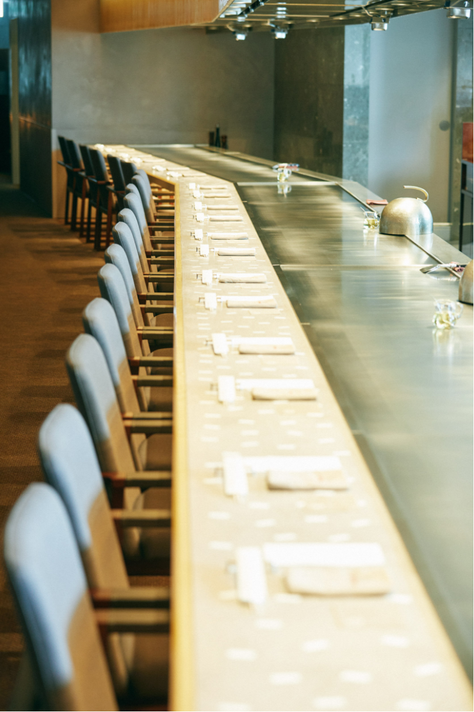
鉄板焼というシンプルな調理でありながら、コースを通して最後まで飽きさせずに感動を与えてくれる“日比谷 モンシェルトントン” 。大切な日に個室を予約するもいいし、迫力ある15メートルほどの研ぎ出しカウンター席もまたオススメ。一度は、食のエンターテイメントを五感で体験してみて欲しい。

〒100-0006 東京都千代田区有楽町1-8-1
ザ・ペニンシュラ東京 5F
・営業時間
全日 12:00 ~ 22:00 (L.O. 21:30)
※ランチタイム16:00まで
・電話受付 午前11時より
ザ・ペニンシュラ東京 5F
・営業時間
全日 12:00 ~ 22:00 (L.O. 21:30)
※ランチタイム16:00まで
・電話受付 午前11時より
Composition & Text: Takako Nagai [CATAL DESIGN]